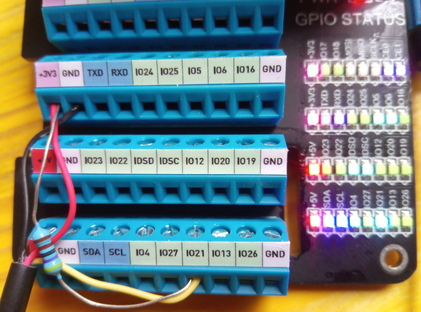
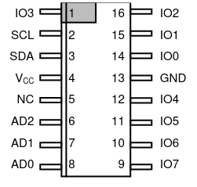

Linux and OneWire (using DS18B20 Temperature Sensor as Slave)¶
Overview¶
This article shows how you use Linux to communicate with OneWire devices. Cornerstones are:
Master, Alternative 1:
w1-gpio- bus master in software (unstable at times)Master, Alternative 2: DS2482 - bus master in hardware, attached to the CPU via I2C
Slave DS18B20 OneWire temperature sensor as a slave device.
Rasperry Pi because everything’s easy there. This article’s principles stand unmodified for other platforms that run Linux (more handwork might be needed though - Pi’s
/boot/config.txtis really cool, for example).
A OneWire device has three wires attached to it: data, ground, and power. Data and ground are mandatory, obviously. Power is optional; if omitted, the device is said to be operated in parasitic mode.
Master Device, Alterative 1: w1-gpio - OneWire Master in Software¶
Lacking a hardware OneWire master (the Raspi does not have one
built-in), we use a software implementation of the OneWire protocol -
the w1-gpio kernel driver. You configure one GPIO to act as the
data line, and the kernel driver is then used to bitbang the OneWire protocol in
and out of the CPU.
Configuration is easy: say you want to use GPIO 21 as data line. In
/boot/config.txt you write,
dtoverlay=w1-gpio,gpiopin=21
Note
Reboot the Pi, and the kernel will load the driver and configure the GPIO accordingly.
Wiring: Attach OneWire Device to GPIO Pin¶
Note
Though not exactly necessary üòâ, it makes sense to halt and power off the Pi before connecting the sensor.
Professional Diagram |
Decadent Pi Addon |
Raspi Pinout |
|---|---|---|

|
 | 
|
When done, reboot and see the device appear in sysfs.
$ ls -l /sys/bus/w1/devices/
total 0
lrwxrwxrwx 1 root root 0 Oct 26 09:58 28-01144fe43baa -> ../../../devices/w1_bus_master8/28-01144fe43baa
lrwxrwxrwx 1 root root 0 Oct 26 09:58 w1_bus_master1 -> ../../../devices/w1_bus_master1
Note
Especially in breadboard setups, the bitbanging master appears to become unstable. Devices are not recognized at all, or appear as random garbage. Here’s one exceptionally amazing crap that I once encountered - one device appearing as two bogus devices,
$ ls -l /sys/bus/w1/devices
total 0
drwxr-xr-x 2 root root 0 Oct 25 17:56 .
drwxr-xr-x 4 root root 0 Oct 25 17:56 ..
lrwxrwxrwx 1 root root 0 Oct 26 08:02 00-400000000000 -> ../../../devices/w1_bus_master1/00-400000000000
lrwxrwxrwx 1 root root 0 Oct 26 08:02 00-800000000000 -> ../../../devices/w1_bus_master1/00-800000000000
lrwxrwxrwx 1 root root 0 Oct 25 17:56 w1_bus_master1 -> ../../../devices/w1_bus_master1
See below for more about OneWire errors.
Master Device, Alterative 2: DS2482 - I2C OneWire Master in Hardware¶
Overview¶
The DS2482 is an I2C device - an I2C slave device - that acts as a OneWire master. It implements the OneWire protocol in hardware, and receives commands from the CPU on behalf of a dedicated driver.
Being an I2C device, we configure it just like any other I2C device. See Linux and I2C (using LM73 Temperature Sensor as Slave) for how I2C devices are configured on Linux.
Once DS2482 is configured, we can attach our OneWire device(s) to it.
Wiring: Attach DS2482-800 via I2C¶
The DS2482-800 is an I2C device just like any other I2C device, so we attach it just like any other. Here’s the pinout, together with the Raspberry header for convenience:
DS2482-800 pinout |
Raspberry 40-pin header pinout |
|---|---|
|  |
|
Connect pins as follows:
DS2482-800 |
Raspberry |
|---|---|
|
|
|
|
|
|
|
|
|
|
|
|
|
|
You may vary the assignment of the AD* address selection
pins. Here, we choose to wire them to ground (0) - according to the
diagram below this gives address 0x18, or 0b0011000.

Configure Software¶
Next, we configure software. Please read Linux and I2C (using LM73 Temperature Sensor as Slave) for details; here we just reproduce shortly what is explained there.
Enable I2C, and Check¶
In /boot/config.txt, add the following line.
dtparam=i2c_arm=on
Reboot and verify all is well.
$ lsmod |grep i2c
i2c_bcm2835 16384 0
sysfs¶$ ls -l /sys/bus/i2c/devices/i2c-1
lrwxrwxrwx 1 root root 0 Oct 4 12:43 /sys/bus/i2c/devices/i2c-1 -> ../../../devices/platform/soc/fe804000.i2c/i2c-1
Verify That Our Device Is There¶
(Optional if you are sure it is there)
i2c-dev exposes bus to userspace¶$ sudo modprobe i2c-dev
$ ls -l /dev/i2c-1
crw-rw---- 1 root i2c 89, 1 Sep 29 14:27 /dev/i2c-1
Device should be there at configured address (0x18),
i2c-detect scans bus¶$ i2cdetect -y 1
0 1 2 3 4 5 6 7 8 9 a b c d e f
00: -- -- -- -- -- -- -- -- -- -- -- -- --
10: -- -- -- -- -- -- -- -- 18 -- -- -- -- -- -- --
20: -- -- -- -- -- -- -- -- -- -- -- -- -- -- -- --
30: -- -- -- -- -- -- -- -- -- -- -- -- -- -- -- --
40: -- -- -- -- -- -- -- -- -- -- -- -- -- -- -- --
50: -- -- -- -- -- -- -- -- -- -- -- -- -- -- -- --
60: -- -- -- -- -- -- -- -- -- -- -- -- -- -- -- --
70: -- -- -- -- -- -- -- --
Announce (“Hotplug”) DS2482 to Linux¶
Finally, tell Linux about the new device at address 0x18. This
will load the responsible driver - it is that driver that is
responsible to communicate with the OneWire devices on the new buses
(the DS2482-800 bring eight buses).
$ sudo -i
# echo ds2482 0x18 > /sys/bus/i2c/devices/i2c-1/new_device
# exit
See if driver is loaded,
$ lsmod |grep ds2482
ds2482 16384 0
wire 36864 2 ds2482
Eight buses there in sysfs,
$ ls -l /sys/bus/w1/devices/
total 0
lrwxrwxrwx 1 root root 0 Oct 26 09:52 w1_bus_master1 -> ../../../devices/w1_bus_master1
lrwxrwxrwx 1 root root 0 Oct 26 09:52 w1_bus_master2 -> ../../../devices/w1_bus_master2
lrwxrwxrwx 1 root root 0 Oct 26 09:52 w1_bus_master3 -> ../../../devices/w1_bus_master3
lrwxrwxrwx 1 root root 0 Oct 26 09:52 w1_bus_master4 -> ../../../devices/w1_bus_master4
lrwxrwxrwx 1 root root 0 Oct 26 09:52 w1_bus_master5 -> ../../../devices/w1_bus_master5
lrwxrwxrwx 1 root root 0 Oct 26 09:52 w1_bus_master6 -> ../../../devices/w1_bus_master6
lrwxrwxrwx 1 root root 0 Oct 26 09:52 w1_bus_master7 -> ../../../devices/w1_bus_master7
lrwxrwxrwx 1 root root 0 Oct 26 09:52 w1_bus_master8 -> ../../../devices/w1_bus_master8
Wiring: Attach OneWire Device to DS2482-800¶
Finally, in analogy to wiring a device to the bitbanging master, we now wire our OneWire device to DS2482. Connect
the device’s data line to any of DS2482-800’s IO* pins, and supply
power and ground.
OneWire device |
DS2482-800 |
Raspberry |
|---|---|---|
Data |
|
|
VCC |
3V3 |
|
Ground |
Ground |
Reboot, and see the device appear in sysfs.
$ ls -l /sys/bus/w1/devices/
total 0
lrwxrwxrwx 1 root root 0 Oct 26 09:58 28-01144fe43baa -> ../../../devices/w1_bus_master8/28-01144fe43baa
lrwxrwxrwx 1 root root 0 Oct 26 09:58 w1_bus_master1 -> ../../../devices/w1_bus_master1
lrwxrwxrwx 1 root root 0 Oct 26 09:58 w1_bus_master2 -> ../../../devices/w1_bus_master2
lrwxrwxrwx 1 root root 0 Oct 26 09:58 w1_bus_master3 -> ../../../devices/w1_bus_master3
lrwxrwxrwx 1 root root 0 Oct 26 09:58 w1_bus_master4 -> ../../../devices/w1_bus_master4
lrwxrwxrwx 1 root root 0 Oct 26 09:58 w1_bus_master5 -> ../../../devices/w1_bus_master5
lrwxrwxrwx 1 root root 0 Oct 26 09:58 w1_bus_master6 -> ../../../devices/w1_bus_master6
lrwxrwxrwx 1 root root 0 Oct 26 09:58 w1_bus_master7 -> ../../../devices/w1_bus_master7
lrwxrwxrwx 1 root root 0 Oct 26 09:58 w1_bus_master8 -> ../../../devices/w1_bus_master8
Over-Engineering? Beauty?¶
What happened so far sounds complicated, and it is.
Hardware Bringup¶
All the wiring
w1-gpioconfiguration in/boot/config.txtI2C configuration in
/boot/config.txtecho ds2482 0x18 > /sys/bus/i2c/devices/i2c-1/new_deviceto load a driverlsmodAll the files in
sysfs
All in all, this is hardware bringup. Using a DS2482, for example, requires
a running I2C bus
code that can communicate with DS2482
code that can interpret DS2482’s OneWire talk
In traditional embedded platforms, running traditional embedded operating systems, one would have to write code to configure the system in such a way.
Linux has abstractions. My favorite abstraction is “Everything is a
file”, and that is used heavily here. No matter what hardware
platform, in Linux I2C slaves are added by writing `` ds2482 0x18``
into /sys/bus/i2c/devices/i2c-<busno>/new_device, and existing
code is loaded in the form of a kernel module (a “driver”).
In Linux, OneWire devices are represented as directories
(/sys/bus/w1/devices/28-01144fe43baa), no matter if you use a
software/bitbanging master or if the master is implemented in hardware
2.
This is exactly the separation of concerns that Linux enforces. Hardware bringup is the responsibility of the kernel (and the bootloader, for that matter).
Device Usage¶
Once the hardware is configured to this point (the kernel has booted, drivers are loaded), the devices can be used without any knowledge of the underlying hardware.
The Linux OneWire interface makes heavy use of the file abtraction, which is good because everything that someone who wants to read temperatures from OneWire sensors, for example, has to know is how to read a file, and which.
See the Kernel OneWire documentation for details of the OneWire interface.
What follows is a walk-through of how to deal with a specific OneWire device, the DS18B20 temperature sensor. View it as a placeholder for any other such device.
Slave Device: DS18B20 Temperature Sensor¶
The DS18B20 OneWire temperature sensor is a popular device. You can find parts that come prepackaged in a metal case; these are still affordable, and really easy to deploy. |

|
Using the Device¶
In most if not all cases, Linux presents hardware as a set of regular
files in sysfs. Read on for how.
As a Generic OneWire Device¶
OneWire masters automatically enumerate their buses, by definition -
so our device should show up automatically in a dedicated directory
/sys/bus/w1/devices/<manufacturer>-<device-address>. (If all is
well; see below for caveats.)
$ ls -l /sys/bus/w1/devices/28-01144fe43baa/
total 0
-rw-r--r-- 1 root root 4096 Sep 22 12:19 alarms
-rw-r--r-- 1 root root 4096 Sep 22 12:19 conv_time
lrwxrwxrwx 1 root root 0 Sep 22 12:19 driver -> ../../../bus/w1/drivers/w1_slave_driver
--w------- 1 root root 4096 Sep 22 12:19 eeprom
-r--r--r-- 1 root root 4096 Sep 22 12:19 ext_power
-rw-r--r-- 1 root root 4096 Sep 22 12:19 features
drwxr-xr-x 3 root root 0 Sep 22 12:16 hwmon
-r--r--r-- 1 root root 4096 Sep 22 12:19 id
-r--r--r-- 1 root root 4096 Sep 22 12:19 name
drwxr-xr-x 2 root root 0 Sep 22 12:19 power
-rw-r--r-- 1 root root 4096 Sep 22 12:19 resolution
lrwxrwxrwx 1 root root 0 Sep 22 12:16 subsystem -> ../../../bus/w1
-r--r--r-- 1 root root 4096 Sep 22 12:19 temperature
-rw-r--r-- 1 root root 4096 Sep 22 12:16 uevent
-rw-r--r-- 1 root root 4096 Sep 22 12:19 w1_slave
A file that is common to all OneWire devices (not only temperature
sensors) is w1_slave, which already contains all we need: the
temperature in milli-celsius (22750).
$ cat /sys/bus/w1/devices/28-01144fe43baa/w1_slave
6c 01 4b 46 7f ff 0c 10 2b : crc=2b YES
6c 01 4b 46 7f ff 0c 10 2b t=22750
As a Hardware Monitoring (hwmon) Device¶
A different aspect to our sensor, DS18B20, is that it is a temperature
sensor - independent of which hardware it is. There is an entire
framework inside the kernel, hwmon, to cover such devices - no
matter if they are OneWire or I2C (or …) devices, or if they are
reachable via a CPU internal bus.
As such (a temperature sensor), the device appears under an
alternative location in sysfs,
$ ls -l /sys/class/hwmon/hwmon1/
total 0
lrwxrwxrwx 1 root root 0 Sep 22 14:44 device -> ../../../28-01144fe43baa
-r--r--r-- 1 root root 4096 Sep 22 14:44 name
drwxr-xr-x 2 root root 0 Sep 22 14:44 power
lrwxrwxrwx 1 root root 0 Sep 22 14:44 subsystem -> ../../../../../class/hwmon
-r--r--r-- 1 root root 4096 Sep 22 14:44 temp1_input
-rw-r--r-- 1 root root 4096 Sep 22 12:16 uevent
temp1_input is what contains information for us (again, the
temperature in milli-celsius):
$ cat /sys/class/hwmon/hwmon1/temp1_input
22750
Note
Question: how do I know that it’s my sensor in
hwmon1?hwmon1seems like a randomly/sequentially chosen name, and I assume the order is not always the same across boots.Answer: correct. But the address of the sensor (that is how you identify your devices in the end) is globally unique. You can use that to find the correct
/sys/class/hwmon/subdirectory.$ ls -l /sys/class/hwmon/hwmon1/device lrwxrwxrwx 1 root root 0 Sep 22 14:44 /sys/class/hwmon/hwmon1/device -> ../../../28-01144fe43baa
lm-sensors¶
It is the hwmon hardware-independent sensor interface that the
userspace lm-sensors framework builds upon. (Github, Wikipedia.)
# apt install lm-sensors
# sensors
rpi_volt-isa-0000
Adapter: ISA adapter
in0: N/A
cpu_thermal-virtual-0
Adapter: Virtual device
temp1: +50.1°C
w1_slave_temp-virtual-0
Adapter: Virtual device
temp1: +21.4°C
OneWire Caveats¶
Bus Topology¶
For stability, a OneWire setup should not exhibit a star topology. Rather, it is best to have one long main line, with only very short branches off of it where the sensors are attached.
Maxim Integrated has a tutorial, Guidelines for Reliable Long Line 1-Wire Networks. There they define the terms radious and weight; it is definitely worth reading.
Error Symptoms¶
Devices disappear, and are replaced by ones that are named like
00-0c4000000000. Here,00is the family which is completely bogus; for example, 28 (hex) would be the expected family. (I believe 0x28 stands for “Dallas”).Reading fails a CRC check,
$ cat /sys/bus/w1/devices/28-02131d9920aa/w1_slave 20 01 4b 46 7f ff 0c 10 5d : crc=5d NO 20 01 4b 46 7f ff 0c 10 5d t=18000
Reading gives me a temperature of 0 degrees.
$ cat /sys/bus/w1/devices/28-011432f138f9/w1_slave 00 00 00 00 00 00 00 00 00 : crc=00 YES 00 00 00 00 00 00 00 00 00 t=0
This is the worst thermometer error you can encounter because it does not declare himself as such. One can imagine what sorts of heating control misbehavior a room temperature of zero degrees would cause.
In my experience 1, the bitbanging driver is only good for the most trivial setups. As soon as you have a larger installation, you’ll see errors of the above sort over and over.
Over time, I was able to reduce the instabilities by cutting the initial star topology down to what I describe above. Still, there were some glitches from time to time. I blame those on the bitbanging in software. OneWire is a slow and easy protocol, but there are still timing constraints that might not be met in some cases.
Sure, I could have tried the Linux realtime options to get better response and timing guarantees. On the other hand, heating control is something that is exactly the opposite of realtime. If a pump is turned on a minute too late, still nothing burns down - this is not a nuclear power plant.
So no: no realtime wanted. Especially because it would have been just another tryout.
Links¶
Footnotes